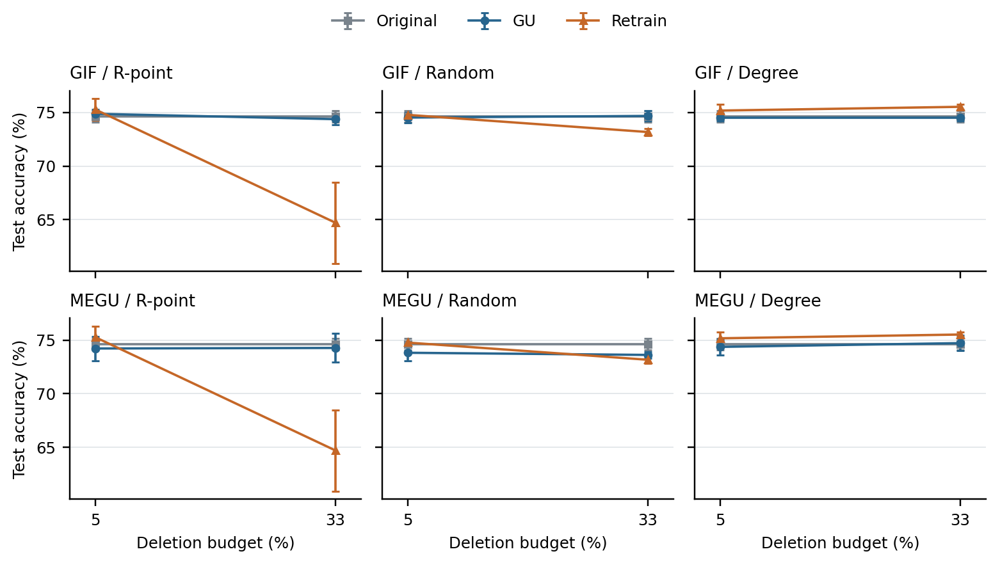
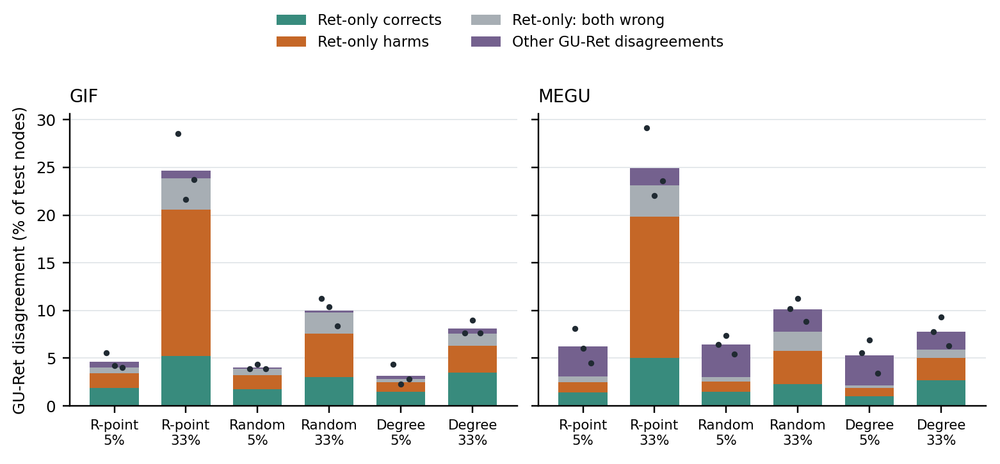

B 两张图已从完整且验收通过的 e85r1 第一层分析生成，保留所有两方法×三策略×两预算×三 seed。图输入与分析核验文件的 SHA 见 B_FIGURE_INPUTS.json。这组图只支持原评价图和原发布流水线下的端点观察；两图、匹配 C&S 和 Ret 训练质量尚待单独结果，不由本图放行写作。

建议 caption：CiteSeer，GCN，R-point、Random、Degree 请求在5%与33%删除预算下的测试准确率。点为三个联合 seed 的均值，误差棒为样本标准差。每个 GU 与其自身请求对应的 Retrain 配对；同一 Original 和共享 Retrain 在两方法面板重复展示，不增加样本量。MEGU 使用既有发布时的 C&S；图中连线仅连接两个选定预算，不表示全部七预算单调。高预算 R-point 下的主要准确率下降来自当前固定训练协议的 Retrain。完整七预算形态应由原080完整范围展示。

建议 caption：同一完整范围下 GU–Ret 预测分歧按真值分类。Ret-only 表示 O=G≠R；分别显示 Ret 纠正 O/G 错误、Ret 将 O/G 的正确预测变错，以及双方均错但标签不同。其他分歧包括 O=R≠G 和三者各异。堆叠高度为三个 seed 的平均计数除以固定666个测试节点，精确还原平均总分歧；黑点显示各 seed 的总分歧。分区不代表因果贡献或遗忘程度，也不将节点当独立重复。R-point/33%大分歧主要属于Ret-only，应围绕更新响应分离解释。
plot_a_confirmation.py 已准备。只有五 seed 确认完整回传及checkpoint取证、分析后才生成；不得用中途数据或合并15个seed代替独立确认。设计为两阶段×两方法四面板，各面板同时显示R-point、D-full和Degree以及每个seed原值。
两张B图已实际查看PNG：坐标、图例、误差棒、分组标签均完整，无重叠或裁切。图宽7.1英寸，矢量PDF/SVG同时输出。堆叠独立算术检查全部通过；没有对低影响绘图代码增加模仿实现的单元测试。当前是数据图稿，最终论文排版后的双栏可读性仍需在完整PDF中检查。